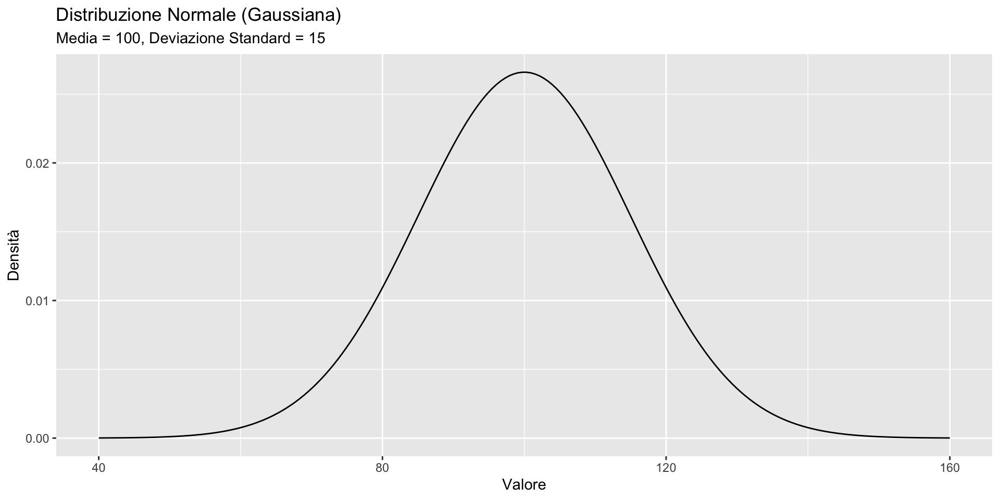
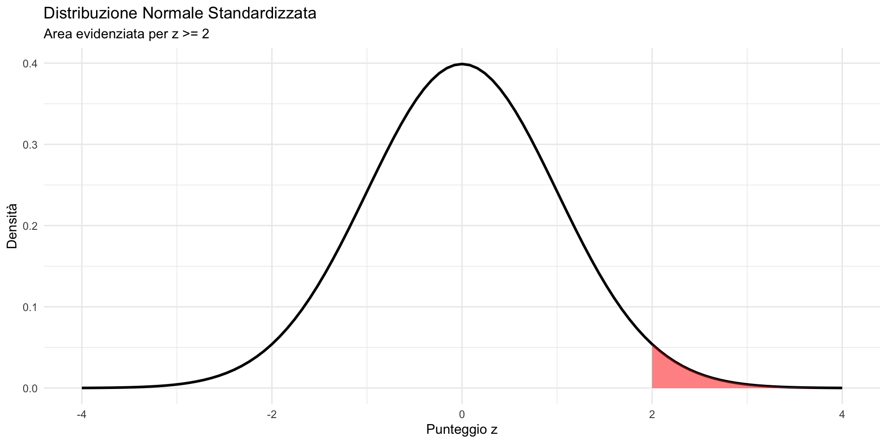
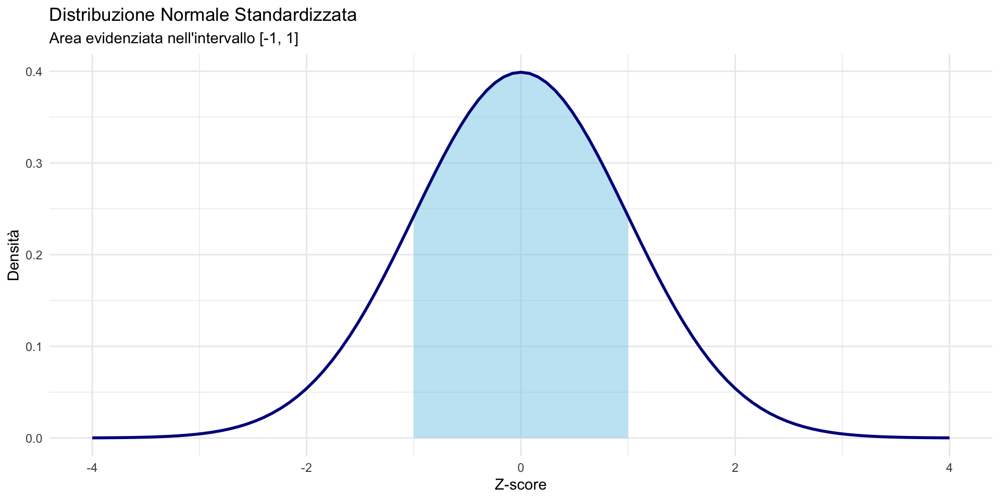
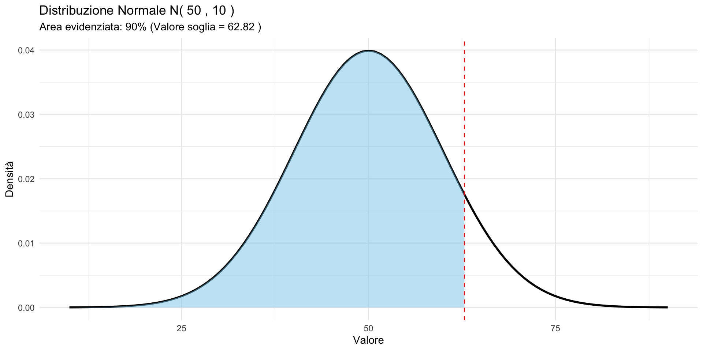
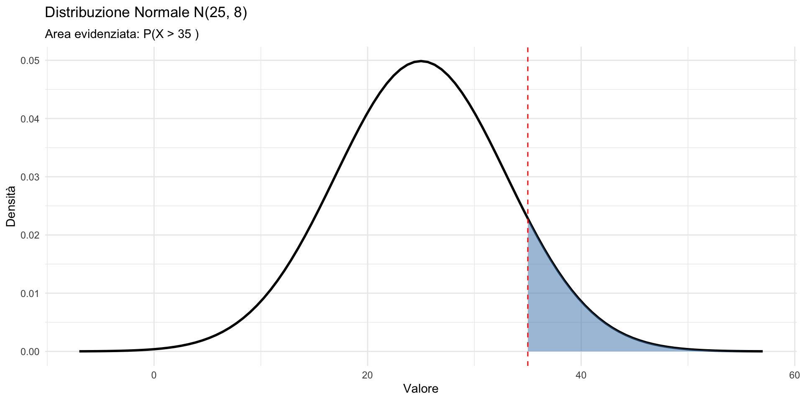
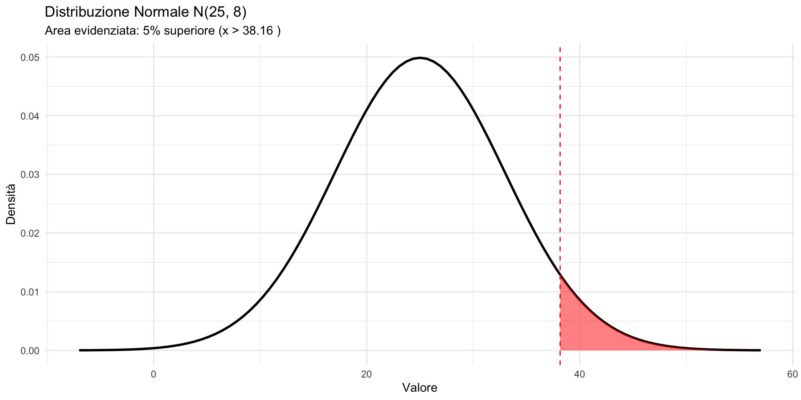
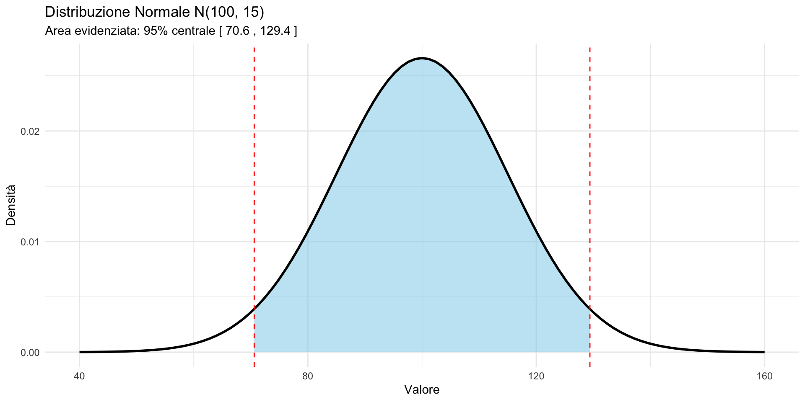

Distribuzioni continue
La distribuzione Normale
![]()
29 ottobre 2026
Il linguaggio dei test psicologici
Un referto che leggerete spesso
Immaginate di ricevere il referto di una valutazione neuropsicologica per un bambino:
“QI totale = 82 (IC 95%: 77–89). Il punteggio si colloca al 12° percentile, cioè 1.2 deviazioni standard sotto la media. L’intervallo di funzionamento è al limite inferiore della norma.”
Ogni numero in questo referto — il punteggio, il percentile, l’intervallo di confidenza, le deviazioni standard — si basa su una distribuzione Normale.
Se non capite la Normale, non potete interpretare un referto. Se non la capite bene, rischiate di prendere decisioni cliniche sbagliate.
Obiettivo
In questa prima parte della lezione introduciamo le distribuzioni continue, concentrandoci sulla distribuzione Normale (o Gaussiana).
L’obiettivo è acquisire padronanza con:
- il concetto di densità e la sua interpretazione;
- il calcolo di probabilità tramite standardizzazione e tavole;
- il significato di quantili e funzione di ripartizione;
- il punteggio z come strumento professionale quotidiano.
Ripasso: dalla massa alla densità
Nelle distribuzioni discrete, ogni valore ha una probabilità specifica \(P(X = x) > 0\).
Nelle distribuzioni continue, la variabile può assumere infiniti valori in un intervallo. La conseguenza fondamentale è:
\[ P(X = x) = 0 \quad \text{per ogni singolo valore } x. \]
La probabilità si accumula su intervalli, non su punti.
La funzione di densità f(x)
Per le variabili continue, la funzione di densità di probabilità (PDF) sostituisce la funzione di massa di probabilità.
Proprietà fondamentali:
- \(f(x) \geq 0\) per ogni \(x\).
- L’area totale sotto la curva è 1: \(\int_{-\infty}^{+\infty} f(x)\, dx = 1\).
- La probabilità di un intervallo è l’area sotto la curva: \[ P(a < X < b) = \int_a^b f(x)\, dx. \]
Attenzione: densità ≠ probabilità
La densità \(f(x)\) non è una probabilità.
- Può essere \(> 1\) in alcuni punti.
- Ciò che conta è l’area, non l’altezza.
Esempio visivo: una distribuzione uniforme su \([0, 0.5]\) ha densità \(f(x) = 2\), perché l’area deve essere 1.
La distribuzione Normale: perché è la più importante
La distribuzione Normale fu scoperta da Gauss nel 1809 studiando gli errori di misurazione e successivamente applicata da Quetelet alle misure umane.
In psicologia, la Normale è ovunque per due ragioni:
- Il Teorema del Limite Centrale garantisce che medie campionarie tendano a distribuirsi normalmente, indipendentemente dalla distribuzione originale.
- La tradizione psicometrica ha costruito quasi tutti i test standardizzati assumendo una distribuzione Normale dei punteggi nella popolazione.
Quando leggete che un test ha media 100 e deviazione standard 15, state leggendo i parametri di una Normale.
La formula della Normale
Una variabile casuale \(X\) segue una distribuzione Normale con parametri \(\mu\) (media) e \(\sigma\) (deviazione standard) se la sua densità è:
\[ f(x) = \frac{1}{\sigma\sqrt{2\pi}} \exp\left\{-\frac{(x-\mu)^2}{2\sigma^2}\right\}. \]
Si scrive: \(X \sim \mathcal{N}(\mu, \sigma)\).
Proprietà chiave:
- simmetrica rispetto a \(\mu\);
- forma a campana, con massimo in \(x = \mu\).
I parametri della Normale
| Parametro | Simbolo | Significato |
|---|---|---|
| Media | \(\mu\) | Centro della distribuzione |
| Deviazione standard | \(\sigma\) | Dispersione attorno alla media |
- \(\mu\) può essere qualsiasi numero reale;
- \(\sigma\) deve essere positivo.
Per il quoziente di intelligenza abbiamo:

Effetto dei parametri
- Cambiare \(\mu\): sposta la curva orizzontalmente (a destra o sinistra).
- Cambiare \(\sigma\): modifica la “larghezza” della campana:
- \(\sigma\) piccolo → curva stretta e alta;
- \(\sigma\) grande → curva larga e bassa.
L’area totale rimane sempre 1.
La regola empirica (68-95-99.7)
Per qualsiasi Normale \(\mathcal{N}(\mu, \sigma)\):
| Intervallo | Probabilità |
|---|---|
| \([\mu - \sigma, \mu + \sigma]\) | ≈ 68.3% |
| \([\mu - 2\sigma, \mu + 2\sigma]\) | ≈ 95.4% |
| \([\mu - 3\sigma, \mu + 3\sigma]\) | ≈ 99.7% |
Un valore oltre \(3\sigma\) dalla media è eccezionale (meno dello 0.3% dei casi).
La regola 68-95-99.7 nella pratica clinica
Questa regola ha un’applicazione immediata nella nostra professione.
Per il QI (\(\mu = 100\), \(\sigma = 15\)):
- 68% della popolazione ha QI tra 85 e 115 (funzionamento “nella norma”);
- 95% ha QI tra 70 e 130;
- un QI sotto 70 (\(> 2\sigma\) sotto la media) riguarda circa il 2.3% — ed è storicamente la soglia per la diagnosi di disabilità intellettiva.
Queste soglie non sono arbitrarie: sono conseguenze dirette della distribuzione Normale.
La Normale standard \(Z\)
La Normale standard è la Normale con:
\[ \mu = 0, \quad \sigma = 1. \]
Si indica con \(Z \sim \mathcal{N}(0, 1)\).
Perché è importante?
Qualsiasi Normale può essere ricondotta alla standard tramite la standardizzazione.
La standardizzazione
Se \(X \sim \mathcal{N}(\mu, \sigma)\), definiamo il punteggio standard (punteggio z):
\[ Z = \frac{X - \mu}{\sigma}. \]
Allora \(Z \sim \mathcal{N}(0, 1)\).
Interpretazione: \(z\) indica quante deviazioni standard \(X\) dista dalla media.
Nota: la standardizzazione si può applicare a qualsiasi distribuzione, non solo alla Normale.
I punteggi z nella pratica psicologica
Il punteggio z è il linguaggio universale della testistica psicometrica. Tutti i punteggi standardizzati sono trasformazioni lineari del punteggio z:
| Scala | Formula | Esempio |
|---|---|---|
| Punteggio z | \(z\) | Media = 0, DS = 1 |
| QI (scala Wechsler) | \(100 + 15z\) | Media = 100, DS = 15 |
| T-score | \(50 + 10z\) | Media = 50, DS = 10 |
| Punteggio scalato | \(10 + 3z\) | Media = 10, DS = 3 |
Quando un referto dice “2 DS sotto la media”, sta dicendo \(z = -2\).
Questo corrisponde a
- un QI di 70,
- un T-score di 30,
- un punteggio scalato di 4.
Sono tutti lo stesso punto nella distribuzione.
Esempio: interpretare un punteggio \(z\)
Se un test ha \(\mu = 100\) e \(\sigma = 15\) e uno studente ottiene \(X = 130\):
\[ z = \frac{130 - 100}{15} = \frac{30}{15} = 2. \]
Lo studente si trova 2 deviazioni standard sopra la media.
Questo significa che il suo punteggio è superiore a quello di circa il 97.7% della popolazione — un’informazione clinicamente molto più utile del semplice numero “130”.
La funzione di ripartizione \(\Phi(z)\)
La funzione di ripartizione (CDF) della Normale standard indica la probabilità che una variabile normale standard \(Z\) assuma un valore minore o uguale a \(z\):
\[ \Phi(z) = P(Z \le z). \]
In termini matematici, questa probabilità è data dall’area sotto la curva della Normale standard a sinistra di \(z\):
\[ \Phi(z) = \int_{-\infty}^{z} \frac{1}{\sqrt{2\pi}} e^{-t^2/2}\, dt. \]
Un punto importante
Questa funzione non ammette una formula chiusa esprimibile con funzioni elementari. Per questo motivo, in pratica:
- si utilizzano tavole della Normale;
- oppure software statistico.
In altre parole, \(\Phi(z)\) non si “calcola a mano”: si consulta o si stima numericamente.
Come usare le tavole della Normale
Le tavole riportano \(\Phi(z) = P(Z \leq z)\) per \(z \geq 0\).
Procedura:
- standardizzare il valore: \(z = (x - \mu)/\sigma\);
- cercare \(\Phi(z)\) nelle tavole;
- interpretare il risultato come area/probabilità.
Lettura delle tavole: esempio
Cerchiamo \(P(Z \leq 1.96)\):
- riga: 1.9;
- colonna: 0.06;
- intersezione: 0.9750.
Quindi \(P(Z \leq 1.96) = 0.975\), ovvero il 97.5% dei valori è sotto \(z = 1.96\).
Simmetria della Normale
La Normale standard è simmetrica rispetto a 0:
\[ P(Z \leq -z) = 1 - P(Z \leq z). \]
Esempio: \[ P(Z \leq -1.96) = 1 - 0.975 = 0.025. \]
Calcolo di probabilità per intervalli
Per trovare \(P(a < Z < b)\):
\[ P(a < Z < b) = \Phi(b) - \Phi(a). \]
Esempio: \(P(-1 < Z < 1)\) \[ P(-1 < Z < 1) = \Phi(1) - \Phi(-1) = 0.8413 - 0.1587 = 0.6826. \]
Calcolo della coda destra
Per trovare \(P(Z > z)\):
\[ P(Z > z) = 1 - P(Z \leq z) = 1 - \Phi(z). \]
Esempio: \(P(Z > 1.645)\) \[ P(Z > 1.645) = 1 - 0.9500 = 0.05. \]
I quantili
Il quantile di ordine \(p\) è il valore \(z_p\) tale che:
\[ P(Z \leq z_p) = p. \]
Quantili importanti:
| \(p\) | \(z_p\) |
|---|---|
| 0.50 | 0 |
| 0.90 | 1.28 |
| 0.95 | 1.645 |
| 0.975 | 1.96 |
| 0.99 | 2.33 |
Quantili e percentili clinici
I quantili sono esattamente ciò che in ambito clinico si chiama percentile.
Quando un referto dice “il paziente si colloca al 5° percentile”, sta dicendo che il suo punteggio \(z\) è circa \(-1.645\) e che il 95% della popolazione ha un punteggio superiore al suo.
Quantili e percentili clinici
I cut-off clinici sono quantili: la soglia diagnostica è quel punto della distribuzione che separa la “norma” dalla “deviazione clinicamente significativa”.
Scegliere dove mettere la soglia è una decisione che bilancia falsi positivi e falsi negativi — esattamente il ragionamento bayesiano che abbiamo visto nella lezione precedente.
Schema riassuntivo del calcolo
Per qualsiasi Normale \(\mathcal{N}(\mu, \sigma)\):
- standardizzare: \(z = (x - \mu)/\sigma\).
- consultare le tavole per \(\Phi(z)\).
- de-standardizzare (se necessario): \(x = \mu + z \cdot \sigma\).
Esercizio 1 — Punteggi al test del QI
Il QI nella popolazione segue \(\mathcal{N}(\mu = 100, \sigma = 15)\).
Domanda: qual è la probabilità che una persona scelta a caso abbia un QI superiore a 130?
Soluzione Esercizio 1
Passo 1: standardizzare
\[ z = \frac{130 - 100}{15} = \frac{30}{15} = 2.00. \]

Passo 2: usare le tavole
\(\Phi(2.00) = 0.9772.\)
Passo 3: calcolare la coda destra
\[ P(X > 130) = 1 - 0.9772 = 0.0228. \]
Circa il 2.3% della popolazione ha un QI superiore a 130.
Nota clinica: questo è il motivo per cui un QI di 130 è spesso usato come soglia per la “plusdotazione intellettiva” — identifica circa il 2% superiore della distribuzione.
Esercizio 2 — Tempo di risposta
I tempi di risposta a uno stimolo seguono \(\mathcal{N}(\mu = 350 \text{ ms}, \sigma = 40 \text{ ms})\).
Domanda: qual è la probabilità che il tempo di risposta sia compreso tra 310 e 390 ms?
Soluzione Esercizio 2
Standardizzare entrambi i limiti:
\[ z_1 = \frac{310 - 350}{40} = -1.00 \quad\quad z_2 = \frac{390 - 350}{40} = 1.00. \]

Consultare le tavole:
\(\Phi(1.00) = 0.8413\) e \(\Phi(-1.00) = 1 - 0.8413 = 0.1587.\)
Calcolare l’area:
\[ P(310 < X < 390) = 0.8413 - 0.1587 = 0.6826. \]
Circa il 68.3% delle risposte cade in questo intervallo — coerente con la regola empirica (\(\pm 1\sigma\)).
Esercizio 3 — Trovare un cut-off clinico
I punteggi a un test di ansia di tratto seguono \(\mathcal{N}(\mu = 50, \sigma = 10)\) nella popolazione generale.
Domanda: quale punteggio separa il 10% più alto della distribuzione?
Questo è esattamente il tipo di calcolo che si fa per stabilire un cut-off clinico: il punto sopra il quale si considera il punteggio “clinicamente significativo”.
Soluzione Esercizio 3
Passo 1: identificare il quantile
Cerchiamo \(x\) tale che \(P(X > x) = 0.10\), ovvero \(P(X \leq x) = 0.90\).

Passo 2: trovare \(z_{0.90}\) nelle tavole
\(z_{0.90} = 1.28.\)
Passo 3: de-standardizzare
\[ x = \mu + z \cdot \sigma = 50 + 1.28 \times 10 = 50 + 12.8 = 62.8. \]
Un punteggio di circa 63 separa il 10% più ansioso. Se usate questa soglia come cut-off, il 10% della popolazione generale risulterebbe “positivo” — un tasso di falsi positivi da tenere in considerazione nella scelta della soglia.
Esercizio 4 — Screening e soglie diagnostiche
Un test di screening per la depressione ha punteggi \(\mathcal{N}(\mu = 25, \sigma = 8)\) nella popolazione sana.
- Quale percentuale di persone sane ha un punteggio > 35?
- Quale soglia lascia sopra solo il 5% della popolazione sana?
Queste due domande corrispondono a decisioni reali:
- quanti falsi positivi genera una certa soglia?
- dove mettere la soglia per controllare i falsi positivi?
Soluzione Esercizio 4a
Standardizzare:
\[ z = \frac{35 - 25}{8} = \frac{10}{8} = 1.25. \]
Consultare le tavole:
\(\Phi(1.25) = 0.8944.\)
Calcolare:
\[ P(X > 35) = 1 - 0.8944 = 0.1056. \]
Circa il 10.6% delle persone sane supera il punteggio 35.

Soluzione Esercizio 4b
Trovare il quantile:
Cerchiamo \(z\) tale che \(P(Z \leq z) = 0.95\).
Dalle tavole: \(z_{0.95} = 1.645.\)
De-standardizzare:
\[ x = 25 + 1.645 \times 8 = 25 + 13.16 = 38.16. \]
Una soglia di circa 38 lascia sopra solo il 5% dei sani (possibili falsi positivi).

Il trade-off nella scelta della soglia
| Soglia | Falsi positivi (sani sopra soglia) | Interpretazione |
|---|---|---|
| 35 | 10.6% | Soglia sensibile — cattura più casi, ma molti falsi allarmi |
| 38 | 5.0% | Soglia più specifica — meno falsi allarmi, ma rischio di perdere casi veri |
Questa è una decisione clinica reale: dove mettere la soglia dipende dal costo relativo di un falso positivo rispetto a un falso negativo.
- In uno screening di massa si preferiscono soglie più basse (più sensibili);
- in un contesto di conferma diagnostica si preferiscono soglie più alte (più specifiche).
Esercizio 5 — Intervallo di normalità
Per un test cognitivo con \(\mathcal{N}(\mu = 100, \sigma = 15)\), trova l’intervallo che contiene il 95% centrale dei punteggi.
Soluzione Esercizio 5
Ragionamento: vogliamo lasciare il 2.5% in ciascuna coda.
Trovare i quantili:
- \(z_{0.025} = -1.96\) (per simmetria: \(z_{0.975} = 1.96\)).
De-standardizzare:
\[ x_{\text{inf}} = 100 - 1.96 \times 15 = 100 - 29.4 = 70.6. \] \[ x_{\text{sup}} = 100 + 1.96 \times 15 = 100 + 29.4 = 129.4. \]
L’intervallo [70.6, 129.4] contiene il 95% centrale della popolazione.

Il significato clinico dell’intervallo di normalità
L’intervallo [70.6, 129.4] è ciò che in ambito clinico si chiama il range di normalità al 95%.
- Un punteggio che cade fuori da questo intervallo è considerato “significativamente deviante” — non nel senso di patologico, ma nel senso statistico di improbabile sotto l’ipotesi di normalità.
Questo è il fondamento logico di ogni referto neuropsicologico che riporta se un punteggio è “nella norma” o “deficitario”: il confronto avviene sempre rispetto a una distribuzione Normale di riferimento.
Riepilogo
In questa prima parte abbiamo appreso:
- La densità descrive la concentrazione di probabilità (non è una probabilità).
- La Normale è definita da \(\mu\) (media) e \(\sigma\) (dev. standard).
- La standardizzazione \(z = (x-\mu)/\sigma\) permette di usare le tavole.
- Le tavole forniscono \(\Phi(z) = P(Z \leq z)\).
- I quantili rispondono alla domanda inversa: dato \(p\), trovare \(x\).
Il filo conduttore
Nella lezione precedente abbiamo usato le distribuzioni discrete per contare eventi (Bernoulli, Binomiale, Poisson).
Oggi siamo passati alle distribuzioni continue — strumenti per descrivere misure che variano con continuità (punteggi, tempi, proporzioni).
La Normale descrive punteggi e misure. La Beta, che vedremo nel prossimo segmento, descrive probabilità e proporzioni — ed è il cuore dell’inferenza bayesiana.
Prossima parte
Nel secondo segmento introdurremo la distribuzione Beta e vedremo come R semplifica tutti questi calcoli.